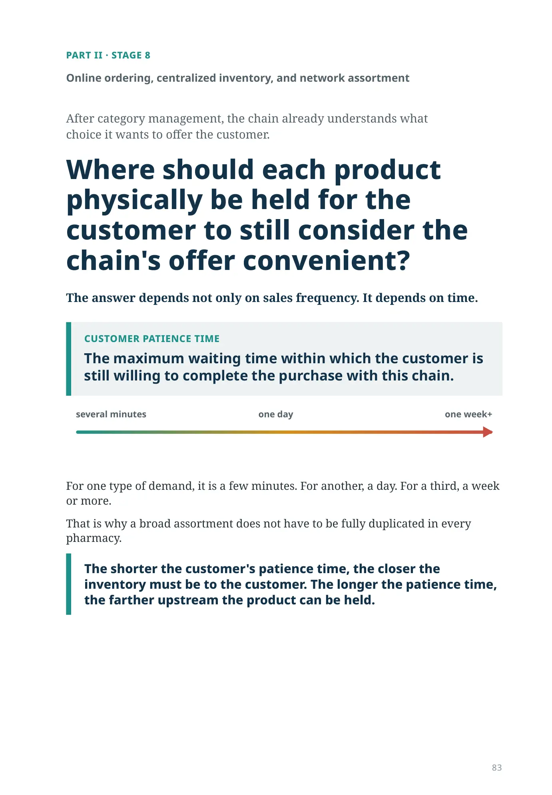
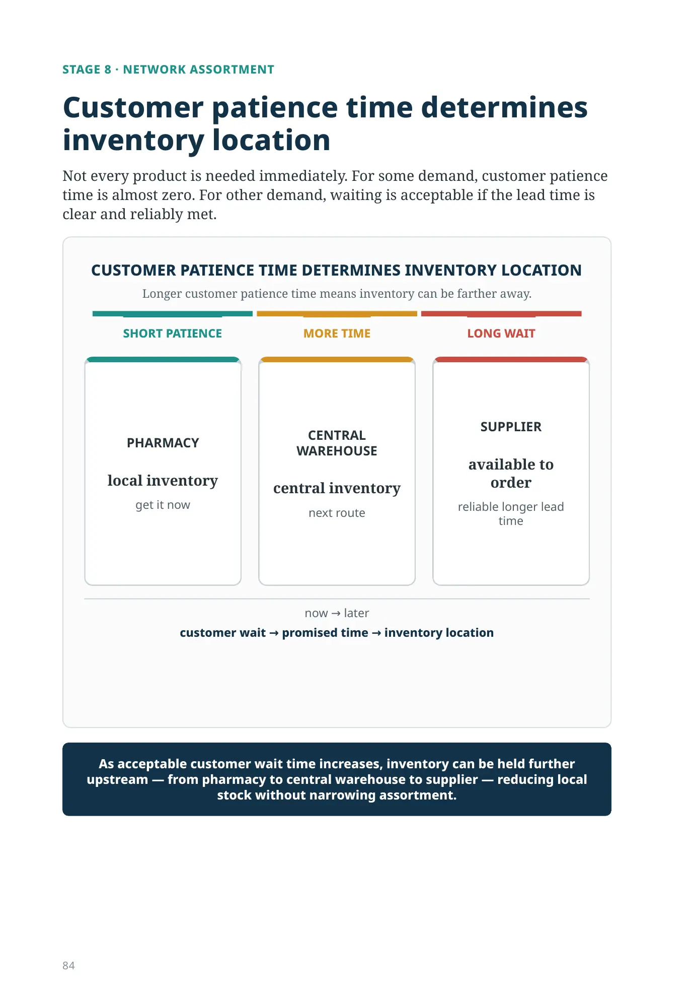
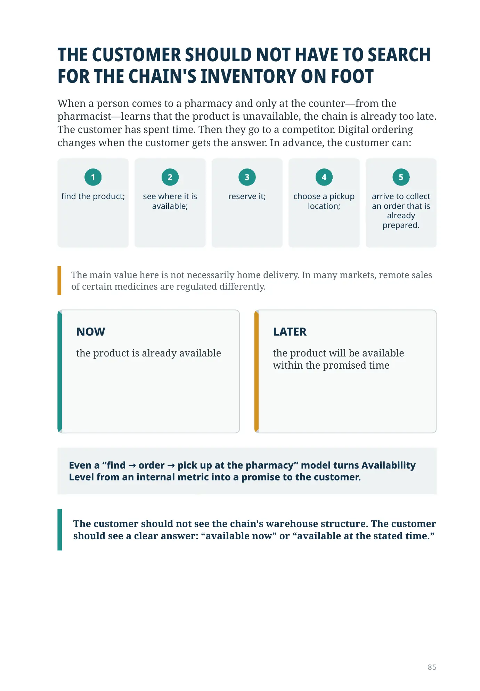
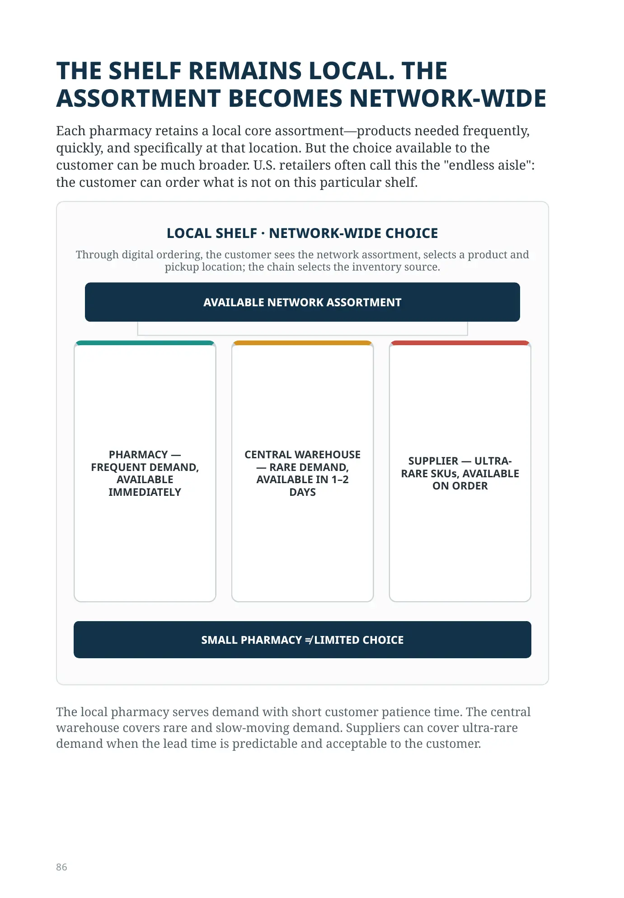
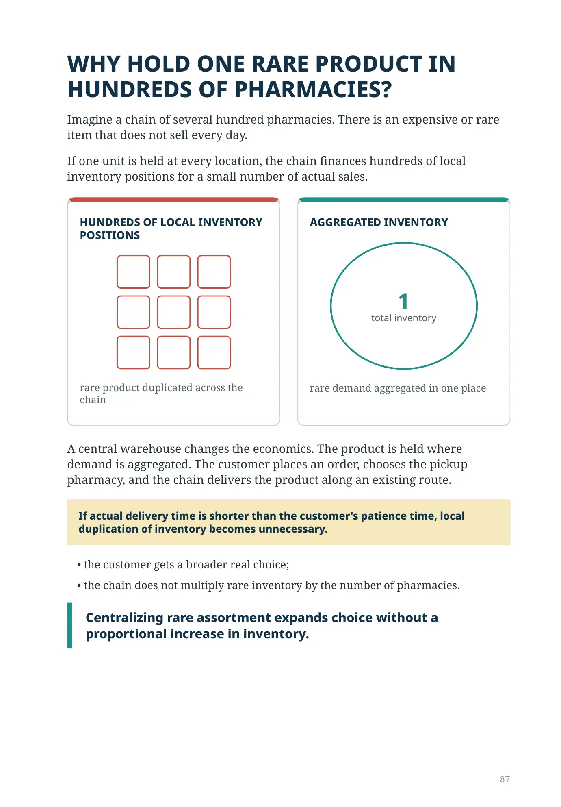
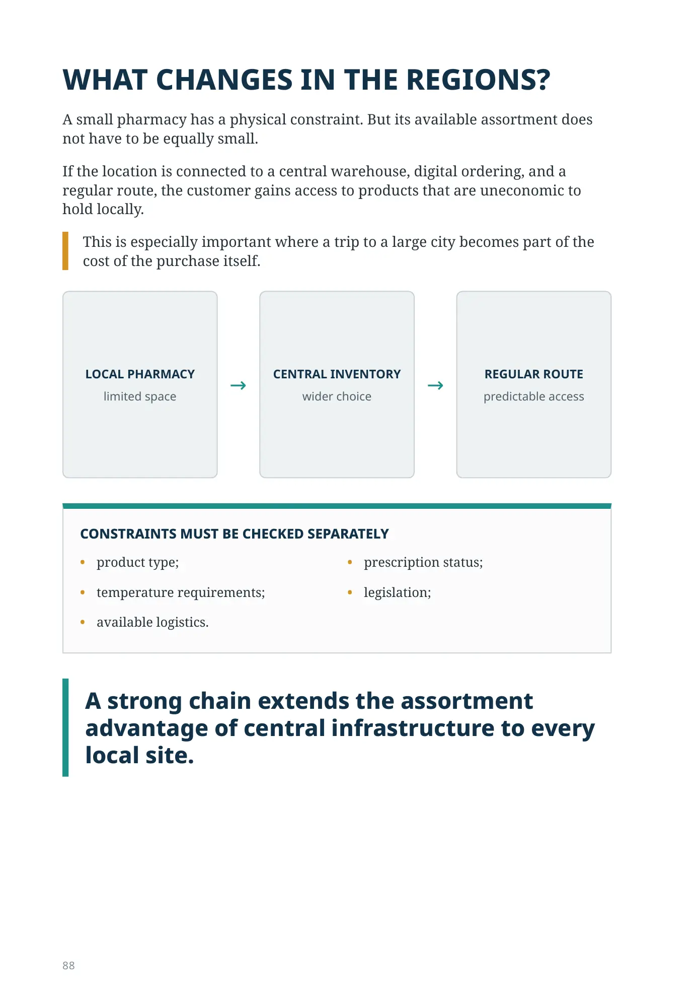
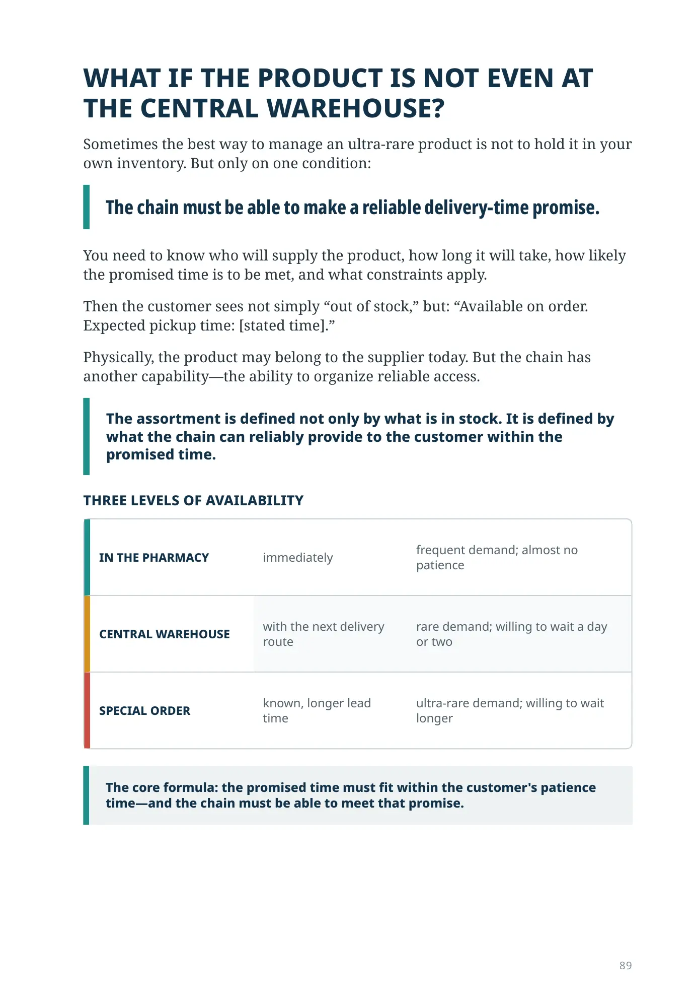
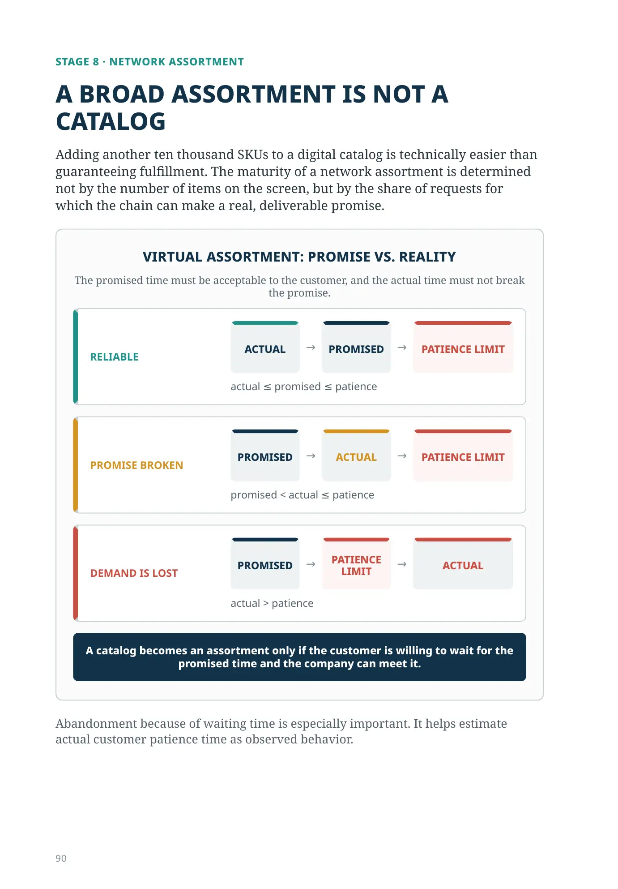
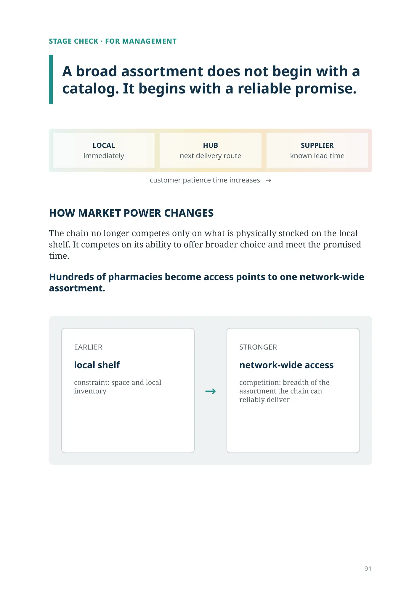
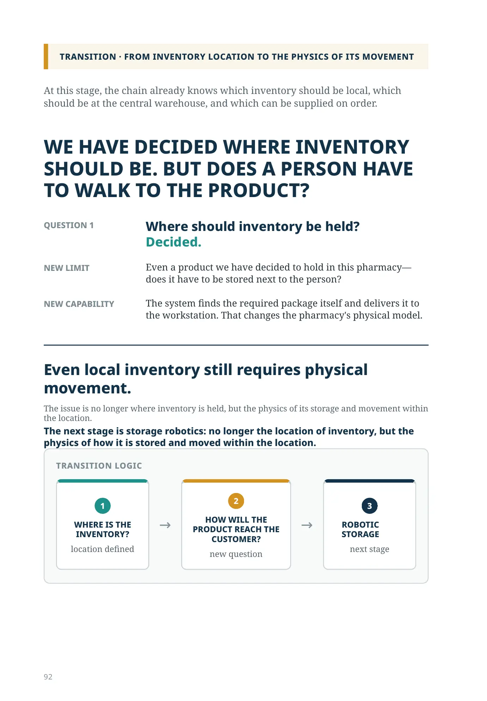

PART II · STAGE 8
Online ordering, centralized inventory, and network assortment
After category management, the chain already understands what choice it wants to offer the customer.
Where should each product physically be held for the customer to still consider the chain's offer convenient?
The answer depends not only on sales frequency. It depends on time.
CUSTOMER PATIENCE TIME
The maximum waiting time within which the customer is still willing to complete the purchase with this chain.
For one type of demand, it is a few minutes. For another, a day. For a third, a week or more.
That is why a broad assortment does not have to be fully duplicated in every pharmacy.
The shorter the customer's patience time, the closer the inventory must be to the customer. The longer the patience time, the farther upstream the product can be held.
STAGE 8 · NETWORK ASSORTMENT
Customer patience time determines inventory location
Not every product is needed immediately. For some demand, customer patience time is almost zero. For other demand, waiting is acceptable if the lead time is clear and reliably met.
Longer customer patience time means inventory can be farther away.
now → later
customer wait → promised time → inventory location
As acceptable customer wait time increases, inventory can be held further upstream — from pharmacy to central warehouse to supplier — reducing local stock without narrowing assortment.
THE CUSTOMER SHOULD NOT HAVE TO SEARCH FOR THE CHAIN'S INVENTORY ON FOOT
When a person comes to a pharmacy and only at the counter—from the pharmacist—learns that the product is unavailable, the chain is already too late. The customer has spent time. Then they go to a competitor. Digital ordering changes when the customer gets the answer. In advance, the customer can:
- 1find the product;
- 2see where it is available;
- 3reserve it;
- 4choose a pickup location;
- 5arrive to collect an order that is already prepared.
The main value here is not necessarily home delivery. In many markets, remote sales of certain medicines are regulated differently.
Even a “find → order → pick up at the pharmacy” model turns Availability Level from an internal metric into a promise to the customer.
THE SHELF REMAINS LOCAL. THE ASSORTMENT BECOMES NETWORK-WIDE
Each pharmacy retains a local core assortment—products needed frequently, quickly, and specifically at that location. But the choice available to the customer can be much broader. U.S. retailers often call this the "endless aisle": the customer can order what is not on this particular shelf.
Through digital ordering, the customer sees the network assortment, selects a product and pickup location; the chain selects the inventory source.
PHARMACY — FREQUENT DEMAND, AVAILABLE IMMEDIATELY
CENTRAL WAREHOUSE — RARE DEMAND, AVAILABLE IN 1–2 DAYS
SUPPLIER — ULTRA-RARE SKUs, AVAILABLE ON ORDER
SMALL PHARMACY ≠ LIMITED CHOICE
The local pharmacy serves demand with short customer patience time. The central warehouse covers rare and slow-moving demand. Suppliers can cover ultra-rare demand when the lead time is predictable and acceptable to the customer.
WHY HOLD ONE RARE PRODUCT IN HUNDREDS OF PHARMACIES?
Imagine a chain of several hundred pharmacies. There is an expensive or rare item that does not sell every day.
If one unit is held at every location, the chain finances hundreds of local inventory positions for a small number of actual sales.
A central warehouse changes the economics. The product is held where demand is aggregated. The customer places an order, chooses the pickup pharmacy, and the chain delivers the product along an existing route.
If actual delivery time is shorter than the customer's patience time, local duplication of inventory becomes unnecessary.
- the customer gets a broader real choice;
- the chain does not multiply rare inventory by the number of pharmacies.
Centralizing rare assortment expands choice without a proportional increase in inventory.
WHAT CHANGES IN THE REGIONS?
A small pharmacy has a physical constraint. But its available assortment does not have to be equally small.
If the location is connected to a central warehouse, digital ordering, and a regular route, the customer gains access to products that are uneconomic to hold locally.
This is especially important where a trip to a large city becomes part of the cost of the purchase itself.
CONSTRAINTS MUST BE CHECKED SEPARATELY
- product type;
- prescription status;
- temperature requirements;
- legislation;
- available logistics.
A strong chain extends the assortment advantage of central infrastructure to every local site.
WHAT IF THE PRODUCT IS NOT EVEN AT THE CENTRAL WAREHOUSE?
Sometimes the best way to manage an ultra-rare product is not to hold it in your own inventory. But only on one condition:
The chain must be able to make a reliable delivery-time promise.
You need to know who will supply the product, how long it will take, how likely the promised time is to be met, and what constraints apply.
Then the customer sees not simply “out of stock,” but: “Available on order. Expected pickup time: [stated time].”
Physically, the product may belong to the supplier today. But the chain has another capability—the ability to organize reliable access.
The assortment is defined not only by what is in stock. It is defined by what the chain can reliably provide to the customer within the promised time.
| IN THE PHARMACY | immediately | frequent demand; almost no patience |
|---|---|---|
| CENTRAL WAREHOUSE | with the next delivery route | rare demand; willing to wait a day or two |
| SPECIAL ORDER | known, longer lead time | ultra-rare demand; willing to wait longer |
The core formula: the promised time must fit within the customer's patience time—and the chain must be able to meet that promise.
STAGE 8 · NETWORK ASSORTMENT
A BROAD ASSORTMENT IS NOT A CATALOG
Adding another ten thousand SKUs to a digital catalog is technically easier than guaranteeing fulfillment. The maturity of a network assortment is determined not by the number of items on the screen, but by the share of requests for which the chain can make a real, deliverable promise.
The promised time must be acceptable to the customer, and the actual time must not break the promise.
A catalog becomes an assortment only if the customer is willing to wait for the promised time and the company can meet it.
Abandonment because of waiting time is especially important. It helps estimate actual customer patience time as observed behavior.
STAGE CHECK · FOR MANAGEMENT
A broad assortment does not begin with a catalog. It begins with a reliable promise.
customer patience time increases →
HOW MARKET POWER CHANGES
The chain no longer competes only on what is physically stocked on the local shelf. It competes on its ability to offer broader choice and meet the promised time.
Hundreds of pharmacies become access points to one network-wide assortment.
At this stage, the chain already knows which inventory should be local, which should be at the central warehouse, and which can be supplied on order.
WE HAVE DECIDED WHERE INVENTORY SHOULD BE. BUT DOES A PERSON HAVE TO WALK TO THE PRODUCT?
QUESTION 1
Where should inventory be held? Decided.
NEW LIMIT
Even a product we have decided to hold in this pharmacy—does it have to be stored next to the person?
NEW CAPABILITY
The system finds the required package itself and delivers it to the workstation. That changes the pharmacy's physical model.
Even local inventory still requires physical movement.
The issue is no longer where inventory is held, but the physics of its storage and movement within the location.